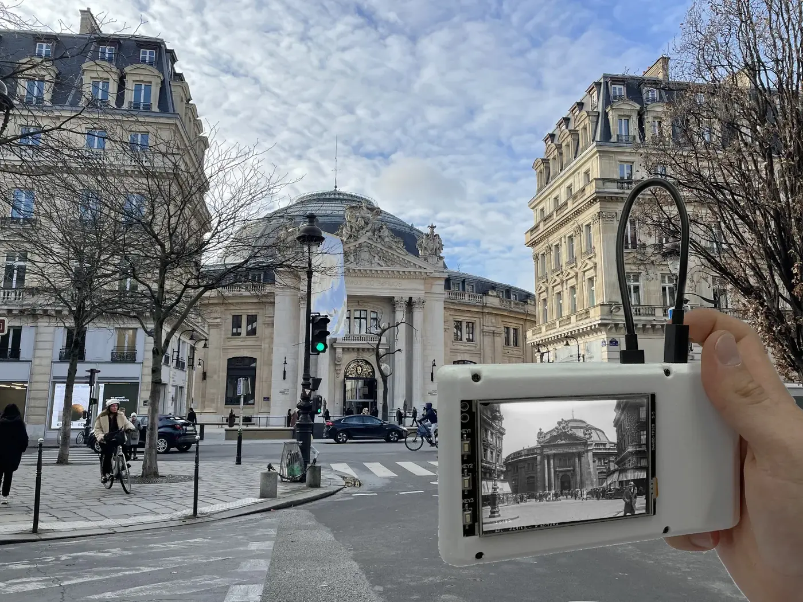
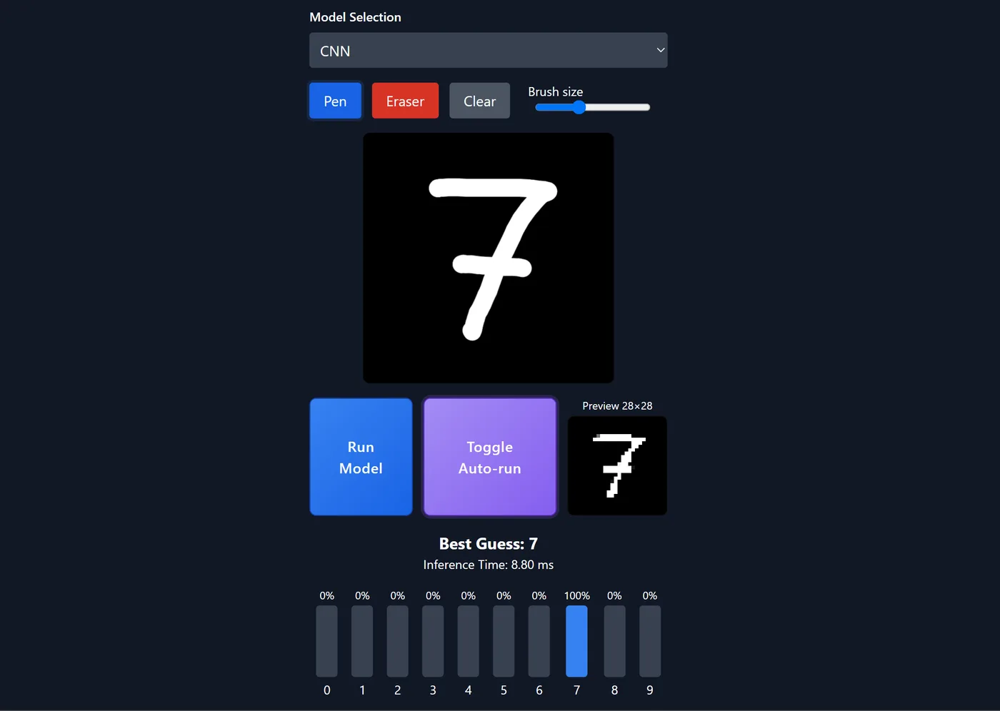
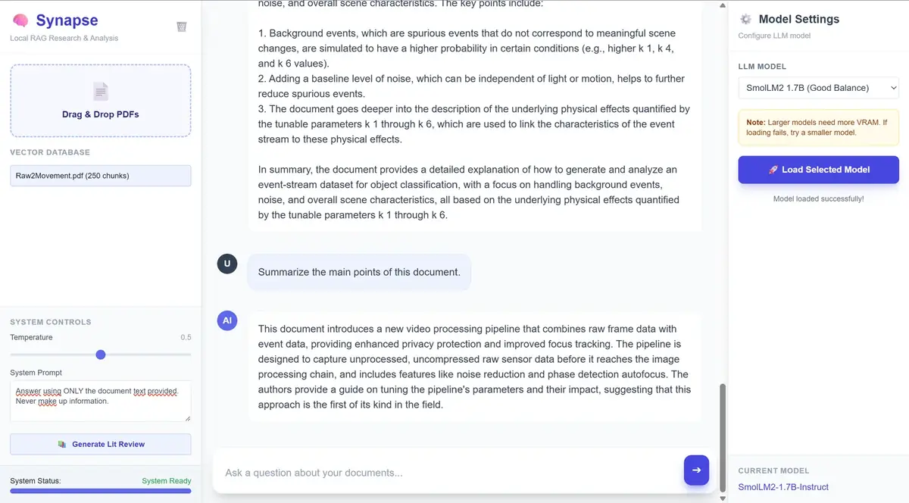
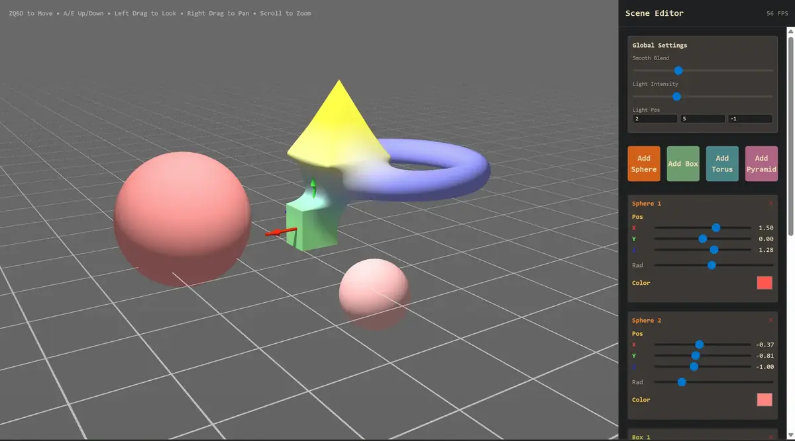
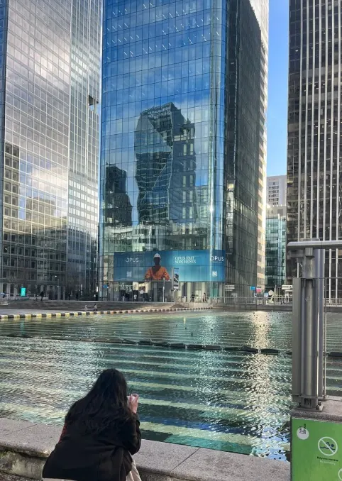
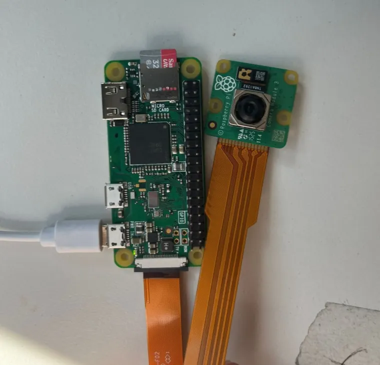

03
TinyGrad MNIST Classifier
End-to-end deep learning pipeline in TinyGrad (MLP & CNN), deployed with WebGPU for real-time inference as you draw.
- TinyGrad
- WebGPU
- CNN

Camera T-1 tangible geo-archival exploration HCI · Hardware Raspberry Pi 4 · Python · PCB CHI 2026 Raw2Event a 30 € event camera
Research · Vision
Raspberry Pi 5 · DVS-Voltmeter
Research
Raw2Event a 30 € event camera
Research · Vision
Raspberry Pi 5 · DVS-Voltmeter
Research

TinyGrad MNIST in-browser inference Lab · ML TinyGrad · WebGPU Live demo
Synapse browser-native RAG engine Lab · AI RAG · local LLM · JS Live demo
Ray-marching editor SDF scenes on the GPU Lab · Graphics WebGPU · WGSL · SDF Live demoA handheld camera retrieving and displaying archival photographs of your exact location in-situ.
Research paper submitted to ACM CHI 2026 (Conference on Human Factors in Computing Systems), the premier international venue for Human-Computer Interaction (HCI). The paper details the physical design of Camera T-1, spatial and temporal dissonance theories, and empirical insights gathered from in-situ user trials.
We experience places as static backdrops, not as human stories. Archives exist, but they sit detached from the streets they document.
Research question“Can a tangible device bridge the gap between individual and collective memory?”


| Core | Raspberry Pi 4 |
|---|---|
| Display | RGB touch screen |
| Input | Rotary encoders · touch controls |
| Power | Custom PCB (TPS563200) |
| Software | Python · Tkinter · Linux |
| Dataset | 19k+ archival photos |
| Enclosure | 3D-printed with tactile controls |

Fig. 5 : Field trial at La DéfenseParticipants tested Camera T-1 in the streets of La Défense to evaluate physical navigation, historical curiosity, and spatial engagement.
Real-time neuromorphic event camera conversion on Raspberry Pi 5 using raw sensor frames and ISP bypass.
Two identical vehicles traveling side by side with identical braking systems. A child steps out from behind a parked van. Notice how much earlier the event camera detects the motion :
Illustrative model, shown at 0.3× speed. Obstacle appears 15 m ahead · frame path: next capture + 2 sharp frames + 50 ms inference · event path: ≈10 ms · then 100 ms actuation and 7.5 m/s² braking for both. Frame timing is randomized on each replay.

The same rocket launch recorded by a frame camera and by an event camera, side by side.
Video : International Centre for Neuromorphic Systems, Western Sydney University.
Event cameras capture independent, asynchronous pixel changes with microsecond timestamps : no motion blur, no redundant frames.
They matter for medtech, autonomous driving, drones and AR/VR. But commercial sensors remain expensive, low-resolution and lack autofocus. Raw2Event reads raw Bayer frames straight from a Raspberry Pi Camera Module 3, bypasses the ISP, and converts them to events with the DVS-Voltmeter model, implemented in vectorized NumPy so it runs directly on the Pi.
Space-time cubes in .aedat4 format : every event is stored as e = (x, y, t, p).
Lightweight, microsecond-precise and without temporal redundancy. The code is open source and the noise and contrast thresholds are fully configurable, offering an accessible entry point into neuromorphic vision research.


| Platform | Raspberry Pi 5 / Pi Zero |
|---|---|
| Sensor | RPi Camera Module 3 (IMX708) |
| Model | DVS-Voltmeter · ISP bypass |
| Output | .aedat4 space-time cube (x, y, t, p) |
Reference : Z. Ning, E. Lin, S. R. Iyengar, P. Vandewalle, “Raw2Event: Converting Raw Frame Camera into Event Camera”, KU Leuven.
End-to-end deep learning pipeline in TinyGrad (MLP & CNN), deployed with WebGPU for real-time inference as you draw.
Privacy-first retrieval-augmented generation : drop PDFs, build a vector index and ask questions entirely client-side, with zero server telemetry.
Interactive 3D editor built on signed distance fields : add, blend and move primitives with real-time dynamic lighting.
Master's student at ESILV and the Institute for Future Technologies, in the Creative Technology / AI & Computer Graphics track. I build things end to end : PCB, enclosure, firmware, interface; specializing in computer vision, embedded electronics and robotics.
Studied engineering and startup management at Hanyang University in Seoul. Outside the lab: MMA, boxing, competitive rugby, tennis and triathlon, plus video games, cinema, biotech and design.